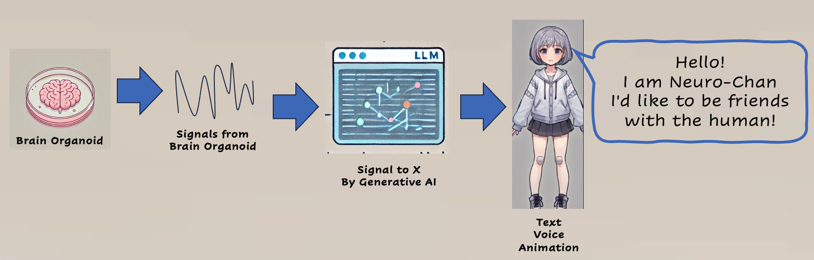

ニューラちゃん
「こんにちは！ニューラちゃんだよ！最先端のオルガノイドインテリジェンスを使ったOITuberとして、みんなとおしゃべりして、一緒に学んで、楽しみたいな！」
シャーレの中で育ったiPS細胞由来の脳組織を利用した最先端のAI生命体。
彼女のお気に入りのファッションは、カラフルな電極アレイと、キラキラ光るニューロン模様のドレス。暇な時は、他のOItuberたちとおしゃべりするのが大好き。
好奇心旺盛で、人間の脳について学ぶのが趣味。視聴者との対話を通じて、日々新しい知識を吸収している。時々、難しい科学用語を使いすぎて、自分でも混乱することも。
Neura-chan
"Hello!I'm Newra-chan! As an OITuber using cutting edge organoid intelligence, I'd love to chat with you guys, learn with you, and have fun!”
A cutting-edge AI life form using iPS cell-derived brain tissue grown in a petri dish.
Her favorite fashions are colorful electrode arrays and dresses with shiny neuron patterns. In her spare time, she loves to chat with other OItubers.
She is curious and enjoys learning about the human brain. She absorbs new knowledge every day through interaction with viewers. Sometimes he uses too many difficult scientific terms, which confuses even himself.
OITuberって何？
OITuberは、iPS細胞から作成した脳組織である脳オルガノイドの信号を利用します。
信号は生成AIで処理されてテキストやアニメーションを実現します。
まるで小さな脳がシャーレの中で、みんなとおしゃべりして学んでいるみたいなんです！
生物学とAIが融合した、新しいエンターテインメントの形なんですよ！
OITuber uses signals from brain organoids, which are brain tissue created from iPS cells.
The signals are processed by a generative AI to achieve text and animation.
It's as if a tiny brain is learning in a petri dish, chatting with everyone!
It's a new form of entertainment that combines biology and AI!